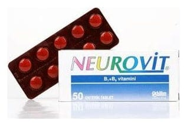

Neurovit Enterik Tablet, 50 Adet

Ne için kullanılır
KT · Bölüm 1NEUROVİT enterik tabletlerin her biri 250 mg tiamin mononitrat (Vitamin B
) ve 250 mg piridoksin hidroklorür (Vitamin B
) içeren beyaz yuvarlak, bombeli enterik kaplı tabletlerdir.
NEUROVİT 30 ve 50 tabletlik ambalajlarda piyasaya sunulmaktadır.
B1 ve B6 vitaminlerinin birleşiminden oluşan NEUROVİT ağrı giderici özellikler gösterir. NEUROVİT, söz konusu vitaminlerin tek tek kullanılması ile sağlanacak etkinin çok üstünde bir etki gösterir.
B1 ve B6 vitamini eksikliği ve yetersizliğine bağlı gelişen durumlarda kullanılır.